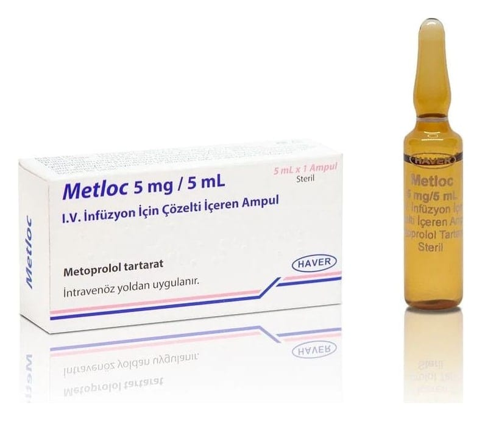

Metloc 5 mg/5 ml IV İnfüzyon İçin Çözelti İçeren Ampul, 1 Adet

Ne için kullanılır
KT · Bölüm 1METLOC içerisinde metoprolol tartarat vardır. 5 mL’lik ampul olarak pazarlanmaktadır. Metoprolol beta blokerler adı verilen bir sınıfa dahildir ve bir beta-l-selektif beta blokeridir. Metoprolol ile tedavi kalpte bulunan beta-1- reseptörleri üzerindeki stres hormonlarının etkisini azaltmaktadır. Kalp atımlarının yavaşlamasına, kalpte ritim bozukluklarının önlenmesine ve tedavisine, aynı zamanda tansiyonun düşürülmesine yol açar.
METLOC aşağıda belirtilen tedavilerde kullanılmaktadır: • Kalp ritmi bozukluklarının önlenmesi ve tedavisinde • Kalp krizi tedavisinde
Bu ilacı kullanmaya başlamadan önce bu KULLANMA TALİMATINI dikkatlice okuyunuz, çünkü sizin için önemli bilgiler içermektedir.
• Bu kullanma talimatını saklayınız. Daha sonra tekrar okumaya ihtiyaç duyabilirsiniz. • Eğer ilave sorularınız olursa, lütfen doktorunuza veya eczacınıza danışınız. • Bu ilaç kişisel olarak sizin için reçete edilmiştir, başkalarına vermeyiniz. • Bu ilacın kullanımı sırasında, doktora veya hastaneye gittiğinizde doktorunuza bu ilacı kullandığınızı söyleyiniz. • Bu talimatta yazılanlara aynen uyunuz. İlaç hakkında size önerilen dozun dışında yüksek veya düşük doz kullanmayınız.